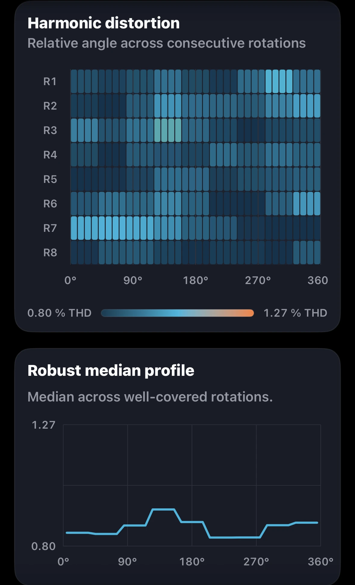
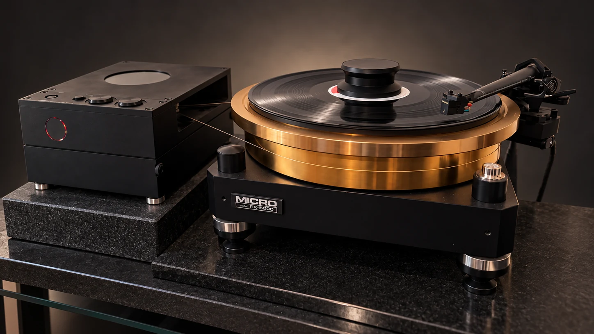
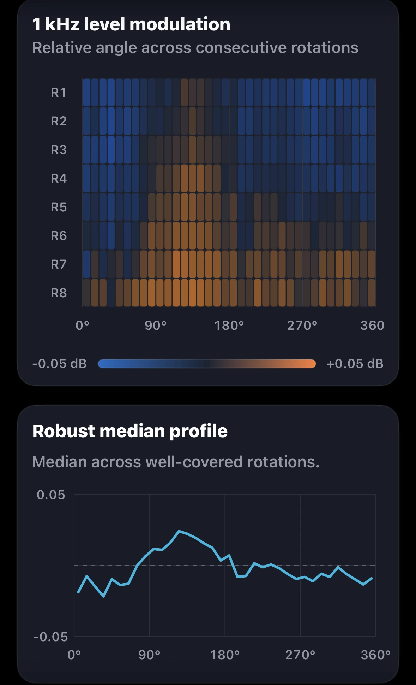
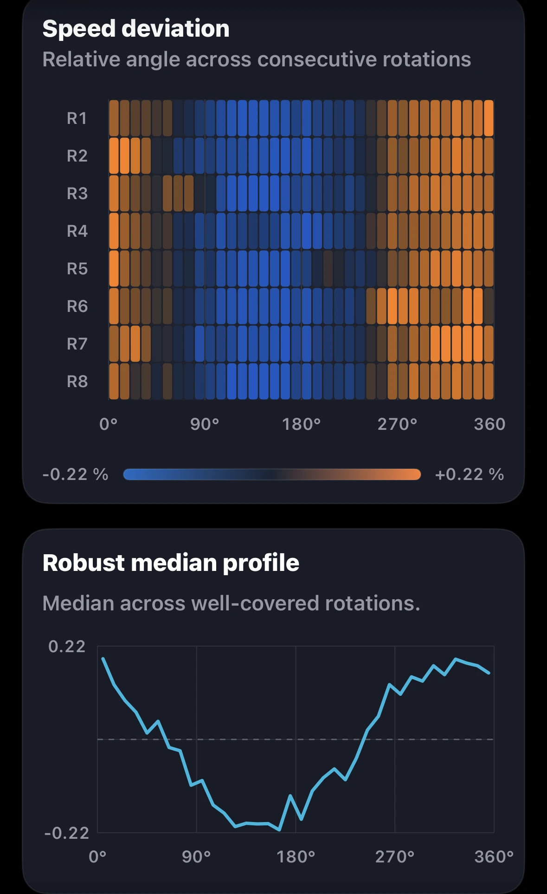

Harmonic distortion

Left channel selected

Groove Scope measurement · GS-2026-0006
A measured view of rotational behaviour, channel performance and harmonic structure in one documented analogue playback chain.
Measurement at a glance
Values are transcribed from the preserved Groove Scope PDF. Together they form a capture-specific view of primary performance and supporting channel behaviour.
Rotation fingerprints
Each card pairs the supplied angular heatmap and robust median profile. Choose L or R to compare the two supplied views. The originals are preserved; channel assignment follows the supplied pair order.

Left channel selected

Left channel selected

Left channel selected

Left channel selected
On smaller screens, swipe horizontally to compare the four cards. The source views show eight consecutive rotations (R1–R8).
Behind the measurement
This Micro Seiki RX-5000 / SME V / Transfiguration Orpheus session follows a 1 kHz reference tone through playback speed, signal level, opposite-channel leakage and harmonic distortion.
The supplied eight-rotation fingerprints show a recurring speed pattern. Channel-specific level and distortion patterns can be compared, but the plots alone do not identify their physical causes.
What stands out
The Micro Seiki RX-5000 / SME V / Transfiguration Orpheus capture measured 33.51 RPM (+0.52%) with 0.031% DIN-shaped wow and flutter RMS. Average separation was 19.5 dB at 1 kHz, channel balance was −0.35 dB, and THD was 0.87% left and 1.18% right.
Directional crosstalk measured −19.1 dB L→R and −19.8 dB R→L. Repeating the same test with documented record and setup settings would establish whether the +0.52% mean speed reading and channel patterns recur.
Measurement chain
Verified components are shown in signal order on one continuous line. Components not used or not verified for a particular method remain absent.
Open technical record
The editorial review connects directly to the source report, structured record, checksums, measurement method and original asset archive.
Measurement results
Every reported numeric result in one place: playback speed, weighted and raw stability, channel behaviour, distortion and the second through fifth harmonics.
| Metric | Measured result |
|---|---|
| Playback speed under stylus load | 33.51 RPM |
| Playback speed error | +0.52% vs 33⅓ RPM |
| Settled speed range | 33.42–33.58 RPM |
| Settled speed span | 0.16 RPM |
| DIN-shaped wow & flutter RMS | 0.031% |
| Raw speed variation RMS | ±0.136% |
| Raw speed variation, 2-sigma | ±0.271% |
| Raw wow RMS | 0.129% |
| Raw flutter RMS | 0.039% |
| Channel balance, L−R | −0.35 dB |
| Average channel separation at 1 kHz | 19.5 dB |
| Electrical crosstalk, L→R | −19.1 dB |
| Electrical crosstalk, R→L | −19.8 dB |
| Crosstalk directional difference | 0.64 dB |
| Total harmonic distortion | Left 0.87%; right 1.18% |
| THD difference, L−R | −0.31 percentage points (source report) |
| Second harmonic (H2) | Left −41.3 dB; right −38.6 dB |
| Third harmonic (H3) | Left −60.1 dB; right −61.7 dB |
| Fourth harmonic (H4) | Left −75.2 dB; right −77.1 dB |
| Fifth harmonic (H5) | Left −73.3 dB; right −73.9 dB |
| H2 difference summary | Right 2.7 dB higher (source report) |
| H3 difference summary | Left 1.6 dB higher (source report) |
| Harmonic reliability | Steady during recording. Suitable for setup guidance. |
Unweighted results complement the DIN-shaped measurement. The report describes harmonic levels as steady during recording. Reported differences retain the source precision; they may differ from subtraction of rounded channel values.